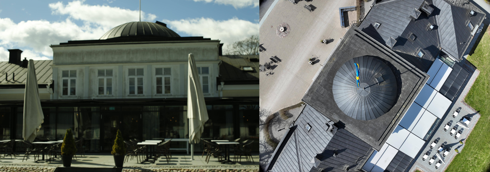

Monograph · 08 · Outdoor · Gränsö
Thesis pipeline · scale · results
Outdoor · Gränsö
Owns outdoor capture realities and visual reconstruction evidence for Gränsö Castle. Done when hybrid photo+neural recommendation is backed by plates, not slogans.
Outdoor is the anti-studio: sun drift, multi-hour sessions, drone + SLR fusion, DoF mistakes. ~5,262 images; RealityCapture aligned ~77.4% at 0.61 px mean error.

Site / capture context montage.

RC entrance / facade detail.

Photogrammetry RealityCapture aerial context — photogrammetry still wins for complete site geometry.

Nerfacto outdoor still.

Splatfacto outdoor still — higher quality on compared region.

Neural multi-section outdoor plate.
Flythrough RealityCapture reconstruction video.
Hybrid workflow
Photogrammetry for complete measurable geometry; neural methods for bounded high-quality visualization under GPU memory limits.